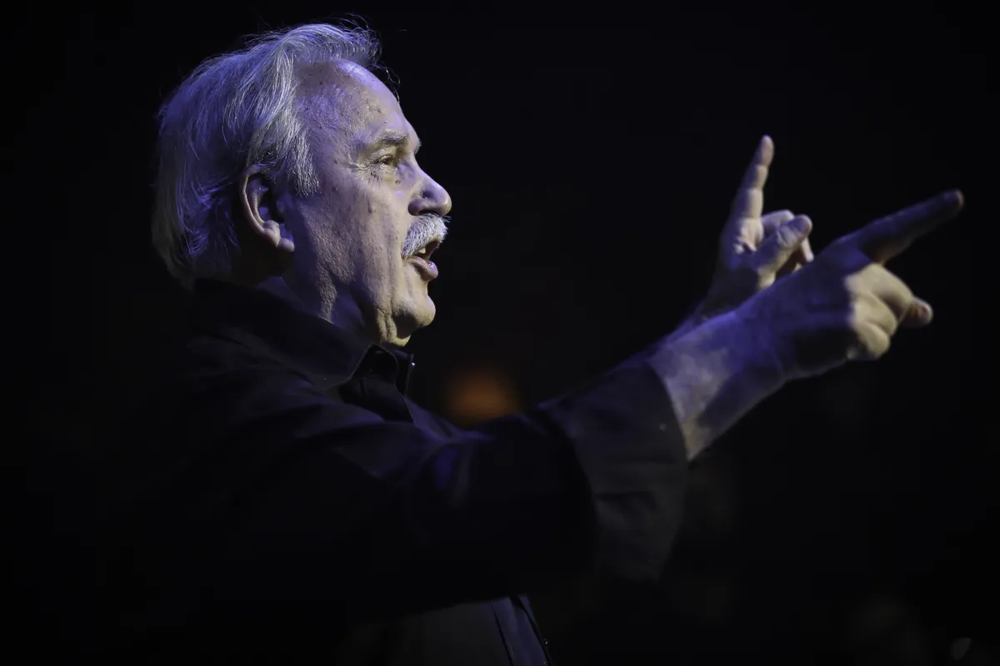
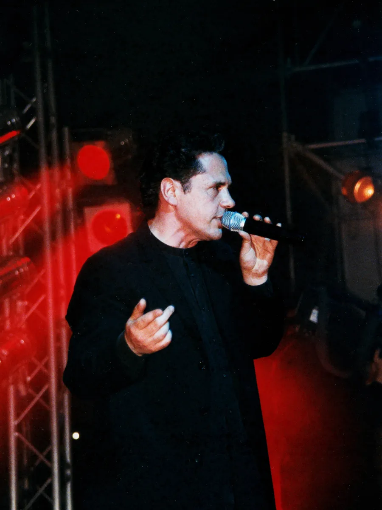
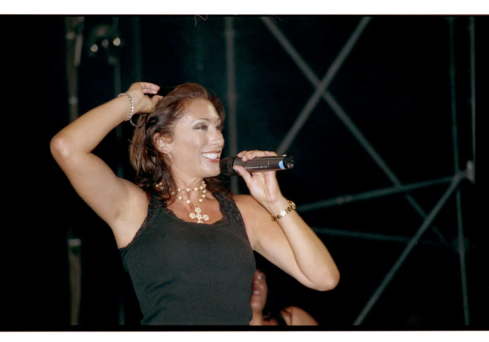
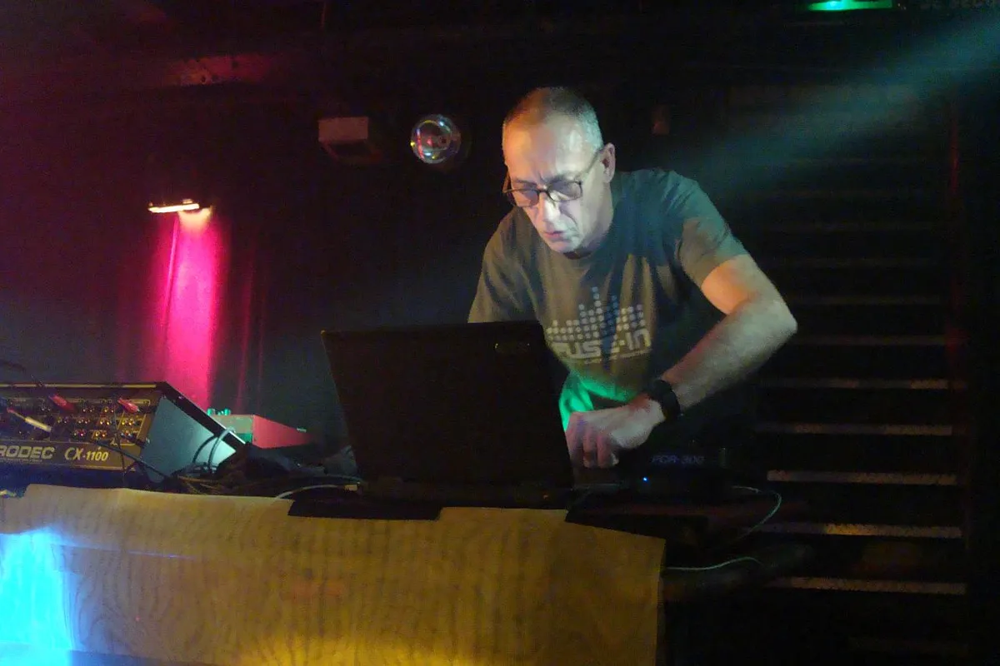
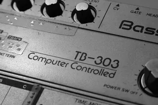
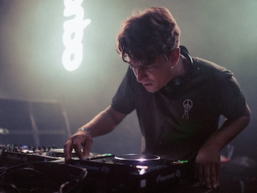

Italo disco
What is Italo disco? The sound, the songs and the artists
Drum machines, synthesizers and English sung by Italians: the dance music Italy made in the early 1980s, and what it gave house.
Italian disco after disco.
Italian disco did not stop when American disco did. After Disco Demolition Night in Chicago in 1979, interest in disco collapsed in the United States, but Europe kept dancing, and Italian producers kept making records for its clubs. Over the next few years they swapped the orchestra for machines. By 1983 the instruments on most of these records were electronic, and the sound had a name abroad, if not yet at home: Italo disco.
Most of it came out of small studios in Milan and Verona, according to the Guardian, and much of it was pressed and distributed by one Milan company, Discomagic, which put out more than 30 singles in 1983 alone. The other labels of that year were American Disco, Crash, Merak, Sensation and X-Energy.
The Italo disco sound.
The Italo disco style is easy to pick out once you have heard a few records. Electronic drums and drum machines carry the beat, synthesizers carry the melody, and the vocal is usually in English, sung by Italians, with lyrics that DJ Mag describes as often nonsensical. The Guardian heard melancholy melodies, weird sounds and unorthodox production in it.
The themes are love, robots and the future. Lectric Workers released "Robot Is Systematic" in 1982; Charlie's "Spacer Woman" (1983) and Kano's "Cosmic Voyager" went to space; Mr. Flagio's "Take a Chance" (1983) is one of the best-known vocoder records of the style. French space disco helped shape those futuristic themes, and DJ Mag also names Vangelis, Giorgio Moroder, funk, new wave and British synth-pop among the influences.
Wikipedia places it between post-disco and synth-pop, with hi-NRG and Euro disco close by. The producers it lists as influences are Giorgio Moroder, Didier Marouani, Cerrone, Bobby Orlando and Patrick Cowley.

Where Italo disco came from.
The first records are usually dated to 1980. Kano's "I'm Ready" came out that year, made by Luciano Ninzatti, Stefano Pulga and Matteo Bonsanto with the singer Glen White. In 1982 Mario Boncaldo and Tony Carrasco released "Dirty Talk" as Klein + M.B.O., their debut single.
In 1983 the music arrived in force. That year alone gave Casco's "Cybernetic Love", Doctor's Cat's "Feel the Drive", My Mine's "Hypnotic Tango", Righeira's "Vamos a la playa", Savage's "Don't Cry Tonight", Scotch's "Penguins' Invasion", Gazebo's "I Like Chopin" and Ryan Paris's "Dolce Vita". Alexander Robotnick, the project of Maurizio Dami, released "Problèmes d'amour" the same year.
Many of these records were hard to find even then. Flemming Dalum, a Danish DJ, told DJ Mag he made eleven trips to Italy between 1983 and 1986 to buy them, because distribution was poor and some records existed only as promos or gimmicks for fashion companies. Collectors now pay hundreds of pounds for the 12-inch singles of 1983 and 1984, the Guardian reported.
Who named it Italo disco.
The name came from outside Italy. In Italy itself, the RAI music show Discoring called the music "rock elettronico", "balli da discoteca" or simply "musica dance", and Wikipedia says the term Italo disco was hardly used there until the 2000s.
The word is tied to ZYX, the West German label that licensed Italian records for the rest of Europe from 1982. "Italo" as a prefix was already on West German compilations from 1978, such as Italo Top Hits on K-Tel and Italo Super Hits on Ariola. Late in 1982 the phrase "Original Italo-Disco" appeared on West German sleeves of Amin-Peck's "Girls on Me" and Flowchart's "Ask the Boss", and in 1983 ZYX released the first The Best of Italo-Disco compilation. That series and the Italo Boot Mix series each ran to 16 volumes by 1991.
The Guardian credits Mikulski of ZYX with coining the term around 1985. Wikipedia is more careful: the sleeves predate that, and there is no proof Mikulski coined it.
The biggest Italo disco hits.
Five records of 80s Italian disco reached the top five in Britain, a country DJ Mag says largely missed the style apart from its chart hits: Ryan Paris's "Dolce Vita", Laura Branigan's cover of "Self Control", Baltimora's "Tarzan Boy", Spagna's "Call Me" and Sabrina's "Boys (Summertime Love)".
"Dolce Vita" (1983) was the debut single of Ryan Paris, the stage name of Fabio Roscioli, released on Discomagic.
"I Like Chopin" (1983) was the biggest of all, a number one in more than 15 countries.

Gazebo is the stage name of Paul Mazzolini. He released "I Like Chopin" on his 1983 album Gazebo, with music by Pierluigi Giombini.
"Self Control" (1984) was written by Bigazzi, Steve Piccolo and Raf, and arranged by Celso Valli. Raf's own version topped the charts in Italy and Switzerland, and Wikipedia says it started the dominance of Italo disco recordings in the continental European charts. Laura Branigan's cover went to number one in Austria, Canada, Switzerland and West Germany and number four on the Billboard Hot 100.
"Tarzan Boy" (1985), Baltimora's debut single, was written by Maurizio Bassi and Naimy Hackett, and its refrain borrows Tarzan's cry. It is often counted as a one-hit wonder, and it came back in a 1993 remix.
Sabrina Salerno's "Boys (Summertime Love)" (1987) came later, when the style was already changing. It went to number one in France and Switzerland and number three in Britain.

MasterClass makes the point that Sabrina was an artist-led act in a scene mostly run by producers.
For the best Italo disco songs beyond the charts, the records DJs keep returning to are a different list. Four of them sit together on I-F's 1999 mix, Mixed Up in the Hague Vol. 1: "Spacer Woman", "Take a Chance", "Problèmes d'amour" and "Dirty Talk".
Italo disco artists.
Behind the hits, many Italo disco artists were producers working under project names, and the singer on the record was not always the face on the sleeve. Den Harrow is the best-known case: the face was Stefano Zandri, a model, while most of the vocals were sung by Tom Hooker, an American. A 2019 documentary, Dons of Disco, told that story.
Savage's best-known record is "Don't Cry Tonight" (1983).
Alexander Robotnick is the name on "Problèmes d'amour", one of the Italo records DJs still play most.
Maurizio Dami kept performing as Robotnick long after the first wave; the photograph is from a show at Batofar in 2007.

Koto and Den Harrow were European stars, DJ Mag says. Ivana Spagna fronted Baby's Gang on "My Little Japanese Boy" (1985) before her solo hit "Call Me". Gary Low, Fake ("Frogs in Spain"), Sandy Marton ("People from Ibiza"), Moon Ray ("Comanchero") and Valerie Dore ("The Night") fill out the 1984 list on Wikipedia.
Italo disco and house music.
Italo disco mattered in Chicago and New York as much as in Europe. Kano's "I'm Ready" was reissued in New York by Emergency Records, and Kano and Klein + M.B.O. are named as influences on house music. SPIN called Doctor's Cat's "Feel the Drive" one of the earliest house songs in 1989.
DJ Mag adds more links. Frankie Knuckles remixed Jago's "I'm Going to Go" (1983), a favourite of Larry Levan, and the Roland 808 and 303 were already on Italian records. Jeffrey Sifre, a Chicago DJ, pointed the magazine to the WBMX radio station and its Hot Mix 5, and called Chicago "the most Italo city in America". The house music guide follows what Chicago did with it.
What happened to Italo disco.
Italo disco faded in the early 1990s and split into several styles. Eurobeat, from the late 1980s, was aimed at the Japanese market and the Para Para dance, through labels such as A-Beat-C and Time Records. Italo house followed around 1987, and Italo dance after it.
The sound also spread under other names. MasterClass calls Italo disco an umbrella term: Canada had Canadian disco, West Germany Euro disco or disco fox, and Japan Eurobeat. Wikipedia's examples are Trans X's "Living on Video" and Lime's "Angel Eyes" for Canada, Modern Talking, Fancy, Bad Boys Blue and C. C. Catch for West Germany, and Koto, Laserdance and Hipnosis for spacesynth, the space-themed instrumental branch.
At home it divided people. MasterClass notes that many Italian fans and DJs dismissed it, and Daniele Baldelli, the Italian DJ, preferred French, English and German records, according to DJ Mag.
The Italo disco revival.
Italo disco has been revived so many times that Ali Renault, a member of Heartbreak, told DJ Mag in 2022 that it was on its eighth or ninth revival. DJ Mag traces the revival that set the pattern to The Hague, to I-F's 1999 mix and the city's pirate radio. The magazine also marks 20 years of the Cybernetic Broadcasting System in 2022 and the Intergalactic FM festival, while Clone Records in Rotterdam reissued old records.
Electroclash picked it up in the 2000s. Nag Nag Nag ran in London from 2002 to 2008, and Miss Kittin & The Hacker's "The Beach" sampled Gary Low's "I Want You". In 2008 the Guardian found a London scene around Cocadisco, run by Piers Martin and Rodaidh McDonald in a Hackney pub, and guests such as David Vunk.
In Italy, Marcello Giordani started the Italo Deviance blog in 2008 and a label the following year. Bordello A Parigi in Amsterdam, founded in 2011 by Otto Kraanen, and reissue labels such as Giorgio Records, Disco Segreta and I Venti brought old records back. Two documentaries, Italo Disco Legacy (2018) and Italo Disco: The Sparkling Sound of the 80s (2021), went back over the first years.
Daniele Baldelli played Boiler Room in 2012.
New Italo disco is still made. DJ Mag names Pablo Bozzi among the current producers, alongside the Running Back label and Krystal Klear. Bozzi played HÖR in Berlin in 2022.
Where to start with Italo disco.
For the hits, start with the five British top-five records, then add "I Like Chopin", the biggest of them all. For the sound DJs play today, start with the four records on I-F's mix: "Spacer Woman", "Take a Chance", "Problèmes d'amour" and "Dirty Talk". For the link to house music, play "I'm Ready" and "Feel the Drive" side by side with early Chicago records. For 80s Italo disco as compilers sold it at the time, the ZYX series The Best of Italo-Disco is the place to look.
Italo disco FAQ.
What is Italo disco music?
Italo disco is electronic dance music made in Italy in the early 1980s, between post-disco and synth-pop. It uses drum machines, synthesizers and sometimes vocoders, is usually sung in English, and its best-known records include "I Like Chopin", "Dolce Vita" and "Tarzan Boy".
What is Italo disco style?
Electronic drums and synthesizers, a melody that is often melancholy, and English lyrics sung by Italians, frequently about love, robots or outer space. Vocoders are common, as on Mr. Flagio's "Take a Chance".
What were the biggest hits of Italo disco?
Gazebo's "I Like Chopin" went to number one in more than 15 countries. In Britain the top-five hits were Ryan Paris's "Dolce Vita", Laura Branigan's "Self Control", Baltimora's "Tarzan Boy", Spagna's "Call Me" and Sabrina's "Boys (Summertime Love)".
What happened to Italo disco?
It faded in the early 1990s and split into Eurobeat, aimed at Japan, Italo house and Italo dance. It has since been revived many times, from I-F's 1999 mix in The Hague to new producers such as Pablo Bozzi.
Who named Italo disco?
The name came from West Germany, where ZYX licensed Italian dance records from 1982 and released The Best of Italo-Disco from 1983. "Original Italo-Disco" was printed on West German sleeves in late 1982. In Italy the term was hardly used until the 2000s.
Is Italo disco the same as Euro disco?
They overlap. Italo disco is the Italian form; Euro disco is the wider European pop-disco sound, and in West Germany, records by acts such as Modern Talking and Fancy were sold as Euro disco or disco fox.
Sources.
Continue reading
Read next.
 Music history~14 min read
Music history~14 min readWhat Is House Music? History, Sound and Chicago Origins
Frankie Knuckles, the Warehouse and the first Chicago records: what house music is, why it is called house, and the styles from deep house to afro house.
Read article →
Music history~14 min readWhat Is Acid House? From Chicago's TB-303 to the UK Rave Boom
A $40 bass machine, three friends in Chicago, a DJ who played their tape four times in a night, and the British movement that borrowed the name.
Read article →
Music history~16 min readWhat Is UK Garage? The Sound, 2-Step, Speed Garage and Bassline
London played an American record too fast until the beat broke. The branches it split into, and the numbers behind its revival.
Read article → Music history~27 min read
Music history~27 min readThe Evolution of UK Electronic Music
Ten sounds that travelled from regional underground scenes into global culture.
Read article →Want something to play while you read? Let the Selector pick a DJ set.